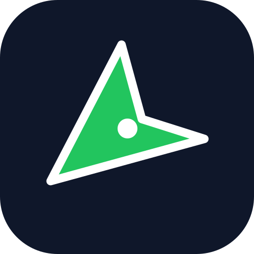

True 3D / heading rotation needs a vector map engine. GPS follow works during navigation.
Peta vektor MapTiler dengan kamera perspektif. Bangunan 3D dipaparkan jika data tersedia.
* Belum disokong OSRM awam; tidak mengubah laluan. Tol sebenar belum dapat disahkan.
Suara lelaki/perempuan bergantung pada suara yang dipasang dalam telefon. Pilih suara yang tersedia.

Navigasi GPS & Komuniti
Anggaran tiba: --:--
Caj tol dan status tol belum disahkan.
Disimpan secara automatik di peranti anda